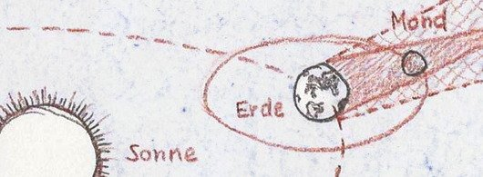

Auf dieser Website ist Platz für das, wofür mein Twitterprofil @charakterziffer nicht ausreicht. Mein Blog ist als Plus zu meinen Tweets gedacht, eben „@cz+“. // Die letzten drei Artikel:
Es gibt ja Kinofilme, die in ihrem Trailer von sich behaupten, auf wahren Ereignissen zu beruhen. Offensichtlich soll diese „Authentizität“ einen Film glaubhafter, relevanter oder irgendwie sonst besser machen. Mich schreckt das eher ab.
Wenn ich einen Film, ein Buch, ein Hörspiel oder sonst ein fiktionales Werk genieße, dann ist mir doch relativ egal, ob es auf Tatsachen beruht. Viel wichtiger ist, ob mich die Geschichte unterhält, ob sie mich packt, überrascht, mein Interesse weckt, mit mitfiebern oder ins Grübeln kommen lässt.
Zwar sagt man, die schönsten Geschichten schriebe das Leben selbst – doch was ist unser durchschnittlicher Alltag schon gegen die Verfolgungsjagden in einem Bond-Film, die dramatischen Wendungen einer Verdi-Oper oder die schaurige Spannung in einem Fitzek-Buch? Natürlich können auch wahre Ereignisse mitreißend sein. Aber dann sind sie doch deshalb gut, weil sie mitreißen, nicht weil sie wahr sind.
Der langen Rede kurzer Sinne: Wenn es um Unterhaltung geht, ziehe ich eine spannende, erfundene Story einer langweiligen, aber wahren vor. Und damit kommen wir zu einer weiteren Tweetsammlung aus meiner Serie „Erfundenes Faktum“:
⎋ Erfundenes Faktum № 51: Wenn man während des Essens Diätsendungen anschaut (vor allem Dokus), dann nimmt man weniger stark zu. (#)
∿ Erfundenes Faktum № 52: Der BND verhindert seit Jahren die Abschaltung von UKW, weil diese deutlich leichter abzuhören ist. (#)
⛊ Erfundenes Faktum № 53: Mit der schwarzen Version des Favicons nimmt Twitter Bezug auf die Raben des Gottes Odin. pic.twitter.com/MS4px4Pm1e (#)
⚲ Erfundenes Faktum № 54: Weil Mücken ein mittleres Blau nicht so gut erkennen, sind Fliegenklatschen in dieser Farbe am erfolgreichsten. (#)
◵ Erfundenes Faktum № 55: TV-Dokus zeigen historische Szenen vor 1800 deshalb so ausgedehnt, damit sich die teure Zeitreise bezahlt macht. (#)
ᘎ Erfundenes Faktum № 56: Mit Weißbier und viel Geduld lassen sich Schnecken so abrichten, dass sie aus einem Beet nur das Unkraut fressen. (#)
☣ Erfundenes Faktum № 57:Schnupfenviren beeinträchtigen den Geruchssinn, damit wir mehr verdorbene Nahrung essen, die uns weiter schwächt. (#)
◙ Erfundenes Faktum № 58: Wenn alle Menschen Waffen trügen, gäbe es weniger Tode in Schießereien. #Lobbylogik (#)
([#][9])
([#][10])
[9]:
[10]:
Diese Twitterserie gibt es übrigens schon seit Dezember 2010. Gesammelt als Blogeintrag kann man die Folgen 1–16, 17–28, 29–40 und 41–50 nachlesen.
im august habe ich das buch „phi phi island“ von josef haslinger gelesen. er berichtet, wie er und seine familie den tsunami von weihnachten 2004 in thailand überlebt hat. ungewöhnlich: das buch ist – so wie dieser blogeintrag – in konsequenter kleinschreibung verfasst. das hat mich anfangs irritiert, aber nach einigen seiten hatte ich mich daran gewöhnt.
im alltag ist es uns normalerweise nicht bewusst, dass wir in unserem schriftsystem eigentlich zwei unterschiedliche alphabete nutzen: groß- und kleinbuchstaben. damit sind wir nicht allein, denn auch im kyrillischen, griechischen, armenischen oder georgischen verwendet man großbuchstaben. viele sprachen funktionieren aber auch „monoalphabetisch“, zum beispiel arabisch, hebräisch, bengalisch oder chinesisch. diese schriftsysteme kommen ohne großbuchstaben aus.
lange zeit war auch im deutschen nur kleinbuchstaben üblich. erst im mittelalter begann man damit, kapitelanfänge oder absätze mit einem besonders hervorgehobenen anfangsbuchstaben auszuzeichnen. personen- und ortsnamen werden seit dem 16. jahrhundert fast durchwegs großgeschrieben. das weitete sich allmählich auf anredefürwörter und titel aus („papst“, „könig“), auf wörter von großer bedeutung („konzil“) und schließlich auf alle substantive.
kann man das nun als weiterentwicklung der sprache sehen? oder stünde es dem heutigen deutsch gut, wieder weniger bedeutsam daher zu kommen? was verliert man durch eine durchgängige kleinschreibung? ist es nicht logischer und ästhetischer, wenn ein text nur ein alphabet verwendet und nicht durch versalien unterbrochen wird?
drei, die bewusst klein schreiben
ein vertreter der konsequenten kleinschreibung ist der autor und projektleiter felix schwenzel. in einem faq-artikel erklärt er, dass ihm die kleinschreibung den schreibfluss erleichtere und er so rotziger (=direkter?) schreiben könne. zudem findet er kleinschreibung ansprechender, keineswegs schlechter lesbar und sie sei mittlerweile zu einem markenzeichen geworden. kleinschreibung diene sogar als eine art „arschlochfilter“, weil es denjenigen, die seine texte lesen, tatsächlich um den inhalt gehe.
eine ganz andere begründung habe ich in einem blogartikel von rudolf greger gefunden. der wiener designer sieht großbuchstaben als irrtümlich eingeführtes mittel der repräsentation, um lesern die eigene wichtigkeit vorzuspiegeln und unterschiede sichtbar zu machen. mit seiner konsequenten kleinschreibung will sich rudolf greger von dieser aufwertung distanzieren, weil „werten nicht zum erfolg führt“.
eine ähnliche ansicht vertrat auch otl aicher (1922–1991). der schriftgestalter und designer gründete die hochschule für gestaltung in ulm und hat unter anderem das design der olympischen spiele in münchen entwickelt. im buch „gehen in der wüste“ kritisiert otl aicher unter der überschrift „rückkehr zu den verben“, wie sehr sich substantive durch ihre großschreibung in den vordergrund drängen. als statische objekte verstellen sie die beweglichen, lebendigen verben (siehe buchbesprechung auf kaffeehaussitzer.de).
wissenschaftliche untersuchung 1
aber großbuchstaben schaffen doch orientierung, unterstützen das querlesen von texten und machen wortbilder einprägsamer, oder? laut einer studie von herbert haberl werden großbuchstaben da überschätzt. der österreichische pädagoge hat 1976 in lesetests mit grundschülern und studenten erforscht, wie gut lesbar texte in kleinschreibung sind (es ging hier um die gemäßigte kleinschreibung, bei der satzanfänge und eigennamen weiterhin großgeschrieben bleiben).
in seiner 96-seitigen arbeit kommt er zu dem schluss, dass sich texte in (gemäßigter) kleinschreibung nach kurzer eingewöhnungszeit genauso gut oder leichter läsen als die großschreibung. das gälte für erwachsene wie auch für kinder. die optische akzentuierung der hauptwörter durch majuskeln wirke für die leser eher störend. so sei die großschreibung dem leser keine hilfe; eine gliederung durch groß geschriebene hauptwörter würde den lesevorgang eher beeinträchtigen.
das ergebnis ist allerdings ein wenig mit vorsicht zu genießen. leider lässt sich aus dem mitgelieferten zahlenmaterial nicht erkennen, ob der versuchsaufbau durch das statistische phänomen „regression zur mitte“ verzerrt wurde.[1]
wissenschaftliche untersuchung 2
wer den wikipedia-artikel über kleinschreibung durchliest, stößt auf zwei studien aus dem jahr 1989. die erste studie hat die augenbewegungen von 22 niederländischen studenten beim lesen aufgezeichnet. die versuchspersonen hatten gute deutschkenntnisse und bekamen fabeln auf deutsch und niederländisch auf einem bildschirm angezeigt. dabei wurde die groß-/kleinschreibung für beide sprachen variiert.[2]
überraschendes ergebnis: die versuchspersonen konnten die niederländischen texte schneller lesen, wenn darin die substantive nach deutscher regel großgeschrieben waren. die leser fixierten dann die wortbilder kürzer und erfassten mit einem blick mehr buchstaben. die zufällige, inverse oder konsequente großschreibung brachte dagegen schlechtere ergebnisse als die gewohnte kleinschreibung.
die autoren der studie folgern daraus, dass guten deutschlesern die gelernte regel auch für niederländische texte hilft. noch bevor der leser die bedeutung eines wortes kennt, erfährt er durch die großschreibung, dass es ein nomen und argument ist.
wissenschaftliche untersuchung 3
die zweite studie von 1989 hinterfragt, ob eine sich eine lesesituation wie in der vorher beschriebenen studie überhaupt mit alltäglichem lesen vergleichen lässt. zwar mag die messung der augenbewegungen genauer sein als wenn die lesezeit per stopptaste festgehalten wird. allerdings hatte jede versuchsperson eine 15 minütige kalibrierung über sich ergehen lassen müssen und war beim lesen mit zwei gurten auf einem zahnarztstuhl festgeschnallt gewesen.
diese studie arbeitete dagegen mit je 100 deutschen und niederländischen studenten. das textmaterial und die schreibvarianten waren identisch mit dem des zuvor beschriebenen versuchs; zusätzlich gab es weitere fabeln und deren übersetzung ins englische. die versuchpersonen erhielten die texte als diaprojektion in deutsch und englisch (für deutsche studenten) bzw. in deutsch und niederländisch (für niederländische studenten).
ergebnis bei den deutschen lesern: sie haben die englischsprachigen fabeln gleich schnell in gemäßigter kleinschreibung gelesen wie in gemischtschreibung nach deutscher regel. (kleine unterschiede: gute englischleser haben sie in kleinschreibung etwas schneller gelesen, schlechtere englischleser in gemischtschreibung). die deutsche schreibung erleichterte den deutschen versuchspersonen das lesen also mehr, als die ungewohnte wortbilder störten.
bei den niederländischen lesern gab es keine vorteile der deutschen schreibung. es ließ sich nur festhalten, dass gute deutschleser die schreibung nach deutscher regel in niederländischen texten weniger störend fanden. gleichzeitig wurden sie durch die kleinschreibung in deutschen texten mehr behindert. für gute wie schlechte deutschleser unter den niederländischen versuchspersonen war es besser, wenn die texte in gewohnter schreibweise präsentiert wurden.
die beiden studien trugen übrigens die titel „augenbewegungen und substantivgroßschreibung – eine pilotstudie“ beziehungsweise „zur funktion der groß- und kleinbuchstaben beim lesen deutscher, englischer und niederländischer texte“. sie erschienen 1989 in „schriftsystem und orthographie“ von den herausgebern peter eisenberg und hartmut günther.
eine diskussion unter typografen
mitte juli ging es im swr2-forum um typografie. es diskutierten die typografen prof. hans andree, prof. dr. erik spiekermann und prof. ulrike stoltz. ab minute 16 ging es auch um die kleinschreibung.
ulrike stoltz schreibt auf einigen tastaturen gern mal konsequent klein. sie hat aber beobachtet, dass die gemischtschreibung für leichter erkennbare wortbilder sorgt. bei schriften wie der johnston sans, die im öffentlichen nahverkehr in london verwendet wird, hat sie eine größere x-höhe bemerkt und schlussfolgert, dass dies bei der gemäßigten kleinschreibung für eine bessere unterscheidbarkeit der buchstaben nötig ist. allgemein schätzt sie die größere visuelle abwechslung bei gemischtschreibung.
erik spiekermann schreibt seine mails pragmatisch klein – allerdings mit großem satzanfang und großgeschriebenen eigennamen. das liegt vor allem daran, weil er mehr englische als deutsche e-post verschickt. den gänzlichen verzicht auf großbuchstaben findet er allerdings „eine rein ideologische forderung, die völlig bescheuert ist“, weil man dann nur noch schwer erkennen könne, wo ein satz endet und ein neuer anfängt.
hans andree verweist auf die brüder grimm, die zeitlebens gegen die verwendung von großbuchstaben gewettert haben (wie im band 1 ihres wörterbuchs: „[i]ch wollte auch den wust und unflat unsrer schimpflichen die gliedmaszen der sprache ungefüg verhüllenden und entstellenden schreibweise ausfegen“; oder in deutsche grammatik: „wer große buchstaben für den anlaut der substantive [braucht], schreibt pedantisch.“). nach dem krieg mit der umstellung von fraktur auf antiqua forderten auch typografen wie paul renner einen neuanfang und die rückkehr zur kleinschreibung (d. h. die rückkehr vor die zeit des barock).
mehrdeutigkeiten, weniger ausdrucksvielfalt
natürlich kann es zu missverständnissen kommen, wenn zur unterscheidung keine großbuchstaben mehr zur verfügung stehen. im deutschen entstehen solche mehrdeutigkeiten besonders leicht, erklärt der literaturwissenschaftler andreas digeser in seinem beitrag „lese-erschwernis oder neue syntax?“ (erschienen in „groß- oder kleinschreibung? – beiträge zur rechtschreibreform“, 1974). die gründe sind:
andere wortarten können wie ein substantiv verwendet werden: „was gibt den faulen antrieb?“
substantivisch, verbale und adjektivische formen haben gleichlautende endungen: „nur alte wagen gefahren“
subjekt und objekt können direkt aufeinander folgen (ohne verb dazwischen): „es sollte jeder höfliche rhetorik beherrschen.“, d. h. jeder höfliche sollte rhet… oder jeder sollte höfliche rhet…
der, die und das können bestimmter artikel oder demonstrativpronomen sein: „sie sollte besser das schreiben lassen.“, d. h. das sollte sie schreib… oder das schreiben sollte sie …
viele der beispiele[3] lassen sich zwar schnell aus dem kontext erschließen, also ob es sich bei „der gefangene floh“ um einen geflüchteten häftling handelt oder um ein eingesperrtes insekt. einige formulierungen versteht man aber erst im größeren zusammenhang. reicht es wirklich, wenn der leser erst nach zwei weiteren sätzen versteht, worum es geht?
damit solche sätze in kleinschreibung eindeutig sind, müssen sie umformuliert werden; das kann man als eingeschränkte ausdrucksvielfalt betrachten.
beleidigen kleinschreiber ihre leser?
warum die kleinschreibung derzeit bei einigen leuten nicht gut ankommt, hat in einem forumsthread auf wer-weiss-was.de die nutzerin klara_673311 schon 2003 recht schön erklärt: man unterstellt dem schreiber faulheit, arroganz („ich stehe über der rechtschreibung“) oder respektlosigkeit den lesern gegenüber. das würde natürlich wegfallen, wenn sich die forderungen nach gemäßigter oder konsequenter kleinschreibung durchsetzten, wie sie beispielsweise der bund für vereinfachte rechtschreibung oder die kleinschriftbewegung aufstellen.
bis nach dem zweiten weltkrieg gab es neben deutsch übrigens eine weitere sprache, in der substantive mitten im satz mit großbuchstaben geschrieben wurden: dänisch. mit der rechtschreibreform von 1948 hat sich dänemark dann aber für die gemäßigte kleinschreibung entschieden. möglicherweise spielte dabei auch eine rolle, dass man sich damit nach dem zweiten weltkrieg von deutschland abgrenzen konnte.
eine entscheidung zwischen schreiber und leser
schrift wird von ganz unterschiedlichen leuten zu unterschiedlichen zwecken benutzt. dementsprechend breit gefächert sind die anforderungen und wünsche, die schreibende haben: formulierung spontaner gedanken, erörterung exakter argumente, poetischer ausdruck von gefühlen, schnelle kommunikation über alltägliches, festhalten von erinnerungen, formelle mitteilungen, …
ich finde, als schreibender sollte man seine leser im blick haben. sie müssen verstehen können, was man sagen möchte, und das geschieht wohl am einfachsten, wenn man die möglichkeiten der großschreibung für sich nutzt. als lesender, so würde ich mir wünschen, sollte man aber ruhig ein wenig offener dafür sein, wie ein autor sich ausdrückt. wenn jemand eine ungewohnte rechtschreibung anwendet, steckt dahinter nicht automatisch dummheit, boshaftigkeit oder wichtigtuerei.
im grunde bin ich recht froh darüber, großbuchstaben zur verfügung zu haben. zum glück sind aber auch blogeinträge wie dieser oder bücher wie „phi phi island“ ganz ohne großbuchstaben möglich. ich mag gedichte mit zurückhaltender kleinschreibung und bleibe im chat auch gerne mal monoalphabetisch (auch wenn der grund dann eher faulheit ist).
[1] regression zur mitte: der versuchsleiter hat aus zwei größeren gruppen aufgrund eines vortests zwei „gleichrangige“ teilgruppen gebildet. gehen wir mal davon aus, die erste gesamtgruppe hat aus eher guten schülern bestanden, die zweite aber aus eher schlechten schülern. beide gruppen machen den vortest und einzelne schüler haben dabei auch glück oder pech. pickt man sich jetzt, um scheinbar gleichartige teilgruppen zu erhalten, diejenigen schüler heraus, die ähnliche testergebnisse hatten, so erwischt man in gruppe 1 diejenigen guten schüler, die diesmal einfach etwas pech hatten; aus gruppe zwei fischt man die schlechteren schüler, denen das glück im vortest hold gewesen war.
beim eigentlichen test verteilen sich glück und pech mit hoher wahrscheinlichkeit anders – es sind ja leistungsunabhängige zufallsgrößen. die eigentlich besseren schüler bringen auch wieder bessere ergebnisse, die schlechteren schlechtere. und das hat nichts damit zu tun, dass der test diesmal in kleinschreibung durchgeführt wurde, sondern es offenbart sich einfach, dass versuchs- und kontrollgruppe eben doch nicht gleichrangig waren. wie gesagt: im anhang der untersuchung fehlen leider die durchschnittszahlen der gesamtgruppen, so dass sich die regression zu mitte weder nachweisen noch ausschließen lässt. [↑]
[2] schreibvarianten: die schreibung der fabeln wurden in den verschiedenen sprachen folgendermaßen variiert:
gemischtschreibung nach deutschen regeln;
gemäßigte kleinschreibung;
alle wortanfänge groß;
zufällige verteilung von großen und kleinen wortanfängen sowie
inversion der deutschen regel (alles was eigentlich groß geschrieben ist, wird klein geschrieben, und umgekehrt).
[3] missverständliche beispiele: es war übrigens ziemlich schwierig, sich solche beispiele auszudenken; da muss einiges zusammenfallen, damit glaubhafte mehrdeutigkeiten entstehen. die ersten drei fälle treten nur auf, wenn man adjektive für gruppenbezeichnungen verwendet: die reichen, die wilden, die jungen. ich persönlich vermeide das eher, weil man damit sehr leicht ins schubladendenken gerät.[↑]
Wer in der Nacht von Sonntag auf Montag (28. September 2015) nicht schlafen kann, sollte einen Blick aus dem Fenster werfen. Von kurz nach Mitternacht bis fast halb sechs spielt sich am Nachthimmel eine totale Mondfinsternis ab.

Dabei wandert der Mond in den Schatten, den die Erde im Sonnenlicht wirft. Das passiert etwa zweimal im Jahr, nämlich immer dann, wenn sich der Vollmond ausreichend nah am Mondkonten befindet (Schnittpunkt der Mondbahn mit der scheinbaren Bahn der Sonne).
Die totale Mondfinsternis wird immer von partiellen Sonnenfinsternissen begleitet, am Neumond davor oder danach. Im Unterschied zur Sonnenfinsternis ist eine Verfinsterung des Mondes aber von jedem Ort auf der Nachtseite der Erde zu sehen.
In der kommenden Montagnacht bewegt sich der Mond zwischen 3:07 Uhr und 6:27 Uhr durch den Kernschatten der Erde. Gänzlich im Erdschatten ist der Mond von 4:11 Uhr bis 5:23 Uhr. Dann ist er fast unsichtbar, schimmert in einem rötlich braunen Licht.
Wer diese totale Mondfinsternis verschläft oder wem Wolken einen Strich durch die Rechnung machen, der hat in Europa nächstes Jahr am 16. September wieder eine Chance – zumindest auf eine teilweise Mondfinsternis.
Das Wort kombiniert Persönlichkeit (Charakter) mit Sachlichem (Ziffer). Zusammengesetzt ergibt sich ein Synonym für Mediävalziffer, eine Zahlenvariante mit Ober- und Unterlängen.
Schriftarten dieses Blogs
Wenn dein Browser eingebettete Schriften (WOFF/TTF) unterstützt, dann liest du die Fließtexte hier in der Source Sans Pro von Paul D. Hunt, erschienen 2012 bei Adobe.
Die Überschriften sind aus der Bitter von Sol Matas gesetzt, die der argentinische Schriftverlag Huerta Tipográfica 2011 veröffentlicht hat.
§1 Die Verwendung meiner Kontaktdaten zur gewerblichen Werbung ist ausdrücklich nicht erwünscht; ich widerspreche hiermit jeder kommerziellen Verwendung und Weitergabe meiner Daten. // Private Fanpost ist allerdings sehr willkommen!
§2 Dieses Blog verlinkt auf Websites Dritter („externe Links“). Zum Zeitpunkt der erstmaligen Verlinkung waren dort keine Rechtsverstöße ersichtlich. Da ich keinen Einfluss auf fremde Websites habe, kann ich für deren Inhalte und Gestaltung keine Haftung übernehmen. Sollte ich von Rechtsverstößen erfahren, entferne ich die Verlinkung unverzüglich. Eine ständige Kontrolle der externen Links ist ohne konkrete Hinweise aber nicht zumutbar.